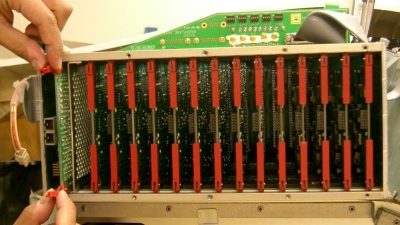
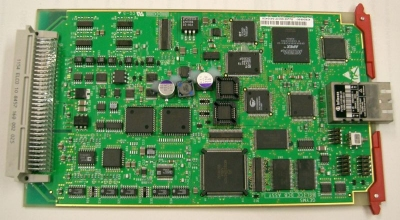
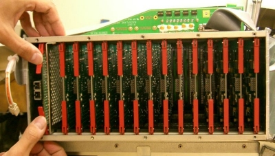

Operating Documentation
Direction 5181166-800, Rev# 7
BrightSpeed Select Service Methods Adv
Operating Documentation |
| Required Persons | Preliminary Reqs | Procedure | Finalization |
|---|---|---|---|
| 1 | Timing Not Applicable | 60 mins | 60 mins |
| Last Revised: | March 16, 2005 |
| Item | Qty | Effectivity | Part# | Manufacturer | |
|---|---|---|---|---|---|
| Standard FE Tool Kit | 1 | - | - | - | |
| Item | Qty | Effectivity | Part# | Manufacturer | |
|---|---|---|---|---|---|
| DAS Control Board (DCB) | 1 | - | - | - | |
| Follow ALL Electro-Static Discharge procedures. Always use ESD Wrist Strap and grounding cords. The use of a ground Monitor is suggested | |
| Follow ALL Electro-Static Discharge procedures. Always use ESD Wrist Strap and grounding cords. The use of a ground Monitor is suggested | |
Position the table to its lowest position.
Remove the gantry right side cover.
| Always turn OFF the HVDC before the 120VAC. Turning OFF 120VAC power before HVDC power can result in equipment damage. | |
Turn OFF Axial Enable, HVDC, and 120VAC switches on the Service Switch panel.
Remove the gantry top and front covers.
Position the DAS at the 12 o'clock position.
Lock the gantry in position using the rotational lock.
Put on wrist strap and use ESD precautions.
Remove the right DAS chassis cover (see Illustration 1):
Disconnect the fiber-optic cable from the Transmit (TX) port.
Loosen the six (6) captive screws that hold the cover in place.
Illustration 1: Right DAS Chassis

Eject the DCB, using the red ejector tabs. See Illustration 2.
Illustration 2: Use Ejector Tabs to Remove DCB from Chassis

Slide DCB out of chassis and place into anti-static bag.
| Follow ALL Electro-Static Discharge procedures. Always use ESD Wrist Strap and grounding cords. The use of a ground Monitor is suggested | |
Remove New DAS Control Board from Anti-Static Bag.
Illustration 3: DAS Control Board

Verify proper jumper configuration:
JP2; no jumpers for normal operation.
(For GDAS-16 only) JP3; no jumpers for normal operation.
(For GDAS-16 only) JP4; no jumpers for normal operation.
Insert new board into chassis:
Align DCB edges to card guides in Chassis.
Slide the board into the chassis until Red ejector tabs align with the card guides (see Illustration 4).
Fold the Red tabs over to push board into place.
Press again with more strength to put into inner end of the chassis.
Illustration 4: Position Card So That Ejector Tabs Fit Into Channel

Turn the Gantry 120VAC power ON (Service Switch Board), and verify DCB Power LED is illuminated.
Turn on the Axial and HVDC switches, on the Service Switch Board.
Disengage rotational lock.
If applications software is up, perform a DAS Reset from the Reset Menu.
| NOTE: | It may be necessary to FLASH the new DCB (see Flash Download Tool (GOC3 Console)). |
Verify proper functionality:
Run at least 10 passes of Scan Data Path Diagnostic.
Take 10 I/Q scans of the 48cm phantom.
Verify fault or reason to replace the board now passes.
Reassemble gantry covers.